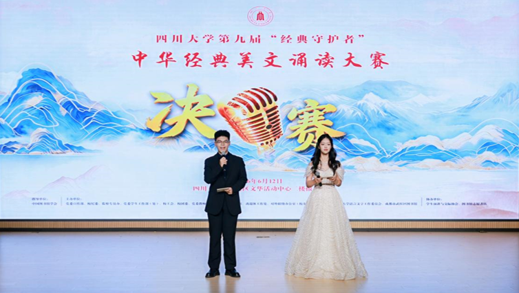

学院通知 · 竞赛比赛
百卅川大 经典赓薪——四川大学第九届“经典守护者”中华经典美文诵读大赛决赛举行
发布时间：2026-06-14 14:01:10
为 深入 贯彻习近 平文化 思想 ，传承百卅学府文脉底蕴，弘扬中华经典传统文化，落实立德树人根本任务，持续打造川大特色诵读品 牌，6月 12日晚， 以“ 百卅川大 经典 赓 薪 ”为主题的四川大学第 九 届“经典守护者”中华经典美文诵读大赛在四川大学望江校区文华活动中心二楼报告厅举行 。校党委宣传部、校纪委、监察专员办、党委学生工作部（处）、校工会、校团委、党委教师工作部、研究生工作部、离退休工作处、对外联络办公室（校友总会）、图书馆、四川大学语言文字工作委员会、成都市武侯区图书馆等主办单位的领导和相关负责人，以及师生代表、校友代表、社区群众代表参加了本次活动。 自 活动启动以来，四川大学第九届“经典守护者”中华经典美文诵读大赛共收到投稿135份。经专家组评审，共28件作品获三等奖 ， 23件优秀作品入围决赛，现场角逐特等奖、一等奖及二等 奖。决赛现场邀请到国家级普通话水平测试员、文学与新闻学院教授肖薇，国家级普通话水平测试员、文学与新闻学院副教授朱姝，四川大学艺术学院戏剧导演付文芯，校工会副主席冷泠，四川大学语言文字工作委员会办公室副主任杜金霞担任评审专家。 四川大学图书馆馆长兰利琼在致辞中强调， 中华经典承载着中华民族的精神追求、价值理念和审美品格，是我们坚定文化自信、涵养家国情怀的重要源泉。诵读经典，不只是声音的表达，更是与先贤对话、与时代共鸣、与自我相遇。“经典守护者”诵读大赛已经走过八载春秋，成为学校书香校园建设和文化育人的重要品牌。 她 鼓励广大青年学子把诵读经典的热情转 化为热爱阅读、勤于思考、勇于实践的自觉；在经典中涵养品格，在书香中丰盈人生，在传承中开创未来。 来自四川大学第一幼儿园的小朋友们带来开场表演《童蒙养正·习惯谣》，以儿童歌谣的方式展现了如何在阅读启蒙阶段让小朋友热爱阅读，修养良好品性。来自成都市武侯区图书馆的获奖代表特邀表演《在冬天的麦苗上看到中国的春天》《读中国》，以动情的朗诵演绎，赞颂了中华民族坚韧向上、勇往直前的精神风貌，表达了对祖国的赞美敬仰。 决赛现场，《祖国啊，我亲爱的祖国》《月光下的中国》《春天里的中国》等作品深情演绎了对祖国母亲的深深眷恋，表达了对祖国的深情礼赞和对美好未 来的无限憧憬；《四川大学赋》《百卅川大，弦歌不辍》通过回望川大130年风雨兼程、薪火相传的办学征程与“海纳百川、有容乃大”的精神品格，展现了百卅川大的辉煌历史、育人担当以及赓续文脉、再创辉煌的坚定信念；《灯》《巴金与四川大学》通过“灯光不灭”的意象与巴金在四川大学的求学经历，表达出巴金先生对信仰与光明的执着追寻、对故乡与母校的深情眷恋，以及温暖人间、永不熄灭的精神力量；《青春》《不朽》《寻梦者》等作品以青春的激情、英雄的不朽、寻梦的执着，演绎出中华儿女不畏艰难、勇担使命、追求光明的赤诚与担当；《外婆的世界》《在山山岭岭间开辟春天》以质朴动人的演绎，通过对亲情的朴素书写表达出在平凡生命中深藏的温柔牵挂与不屈前行的力量。作品《爱莲说》通过赞颂莲花“出淤泥而不染”的高洁形象，宣扬中华优秀传统文化中君子清正廉洁、洁身自好的美德 。 经专家评委现场评审， 人事处（人才工作办公室）李妮、路顺，党委保卫部（处）王锐老师 《 春天里的中国 》 ，文学与新闻学院 卢 飞扬《在山山岭岭间开辟春天》，文学与新闻学院王俊杰 《 不朽 》作品 荣 获特等奖 ；华西医院上 锦医院 赵 莉、蔡雨廷、钟麒麟、苏永维、王成林、曾安吉、彭极滔老师 《 纸上星河 》 ，华西临床医学院（华西医院）叶佳琪、化学学院成静怡 《 四川大学赋 》 ，古典学 系曹莹月 《 灯（节选） 》 ，公共管理学院李润齐、王怡文，文学与新闻学院王一霖，水利水电学院王钰贤 《 青春 》 ，文学与新闻学院刘昕妍 《 月光下的中国 》 ，文学与新闻学院张瑞怡 《 外婆的世界 》 ，华西临床医学院（华西医院）陈泽萱 《 祖国啊，我亲爱的祖国 》 ，华西基础医学与法医学院赵子淳、文学与新闻学院彭红稀 《 我的南方和北方 》作品 荣 获一等奖 ；历史文化学院（旅游学院、考古文博学院）王昕怡《巴金与四川大学（节选） 》 ，艺术学院唐浩博《盛世中国》，少数民族预科班晏宇 娴 《寻梦者 》 ，外国语学院何苓 淋 《 爱莲说 》 ，水利水电学院王耀辉《四川大学赋（节选） 》 ，文学与新闻学院岑佳垚 《 春天，遂想起 》 ，少数民族预科班田晋睿《百卅川大，弦歌不辍》，少数民族预科班穆斯塔帕·安木都拉《灯 》 ，国际关系学院 陈姿含 《 月光下的中国 》 ，法学院（律师学院） 叶馨 《 在冬天的麦苗上，看到中国的春天 》 作品 荣 获二等奖。 2026年，四川大学图书馆继续与武侯区图书馆深入合作，以传播与普及阅读文化为己任，大力发挥四川大学图书馆作为全民阅读普及基地和四川省社科普及基地作用，以声传情、 以诵会友 ，让经典之声从校园走向社区、传向社会。 经四川大学中华经典美文诵读大赛专家组的指导与评审，成都市武侯区图书馆诵读大赛最终评选出优秀作品共 4 项，并在决赛现场为其颁发奖项。 四川大学“经典守护者”中华经典美文诵读大赛自2018年正式创办以来，已成功举办 九 届。大赛覆盖全校师生， 融汇 文理工 医 ，辐射社区社群，逐步搭建成本科生、研究生、教职工同登台，街道办、中小学幼儿园、公共图书馆齐参与的中华优秀传统文化和语言文化交流平台。 九 年来直接参赛师生 4500 余人，累积收集优秀朗诵作品1 4 00余件，线上线下有机融合，已成为极具影响力的高校语言文字工作品牌活动。大赛 始终 围绕社会发展热点，凸显时代主题， 充分 发挥文化育人阵地作用 ，并 借助校内优秀师资力量组织开展赛前系列培训，以赛促学，让经典从书页走向舞台，从校园传向社会，充分展现了川大人守护经典、传承文脉、面向未来的精神风貌。 供稿：许笑月 段嘉芹 徐智
